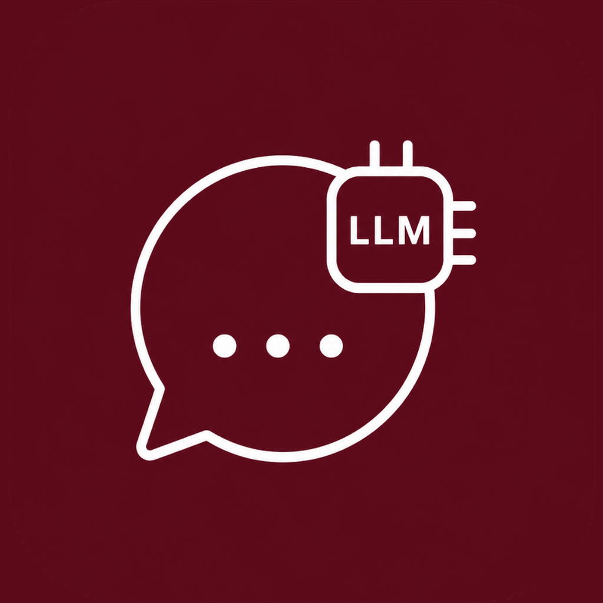

UTGPT runs Large Language Models natively in your pocket.
0.5B / 1.5B parameters. Fast, highly capable reasoning on mobile hardware.
Loaded & Ready135M / 360M edge model. Instant startup with minimal RAM consumption.
Installed1.1B quantized architecture. Balanced text generation on mobile CPU.
Installed
Zero Servers. Zero Telemetry. 100% Private On-Device AI.